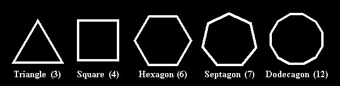

A polygon is a two-dimensional shape made up from straight lines, like a triangle or a square, whereas a polyhedron is a three-dimensional shape, made up from flat planes, like a pyramid or a cube. Consider regular polygons: these have every edge and angle the same, like these:

There are an infinite number of regular polygons. The one with n sides is often written n-gon, and n can go from 3 on up. The larger n is, the more like a circle is the n-gon.
In three dimensions, the regular convex polyhedra are those which which can be constructed by choosing a regular convex polygon and having the same number of them meet at each corner. There are only five of them:
My personal favourite, for whihc I offer no excuse, is the icosahedron. Actually this is really the same thing as the dodecahedron, just dressed up differently -- they are duals of each other. Think of replacing each face of one with a vertex, and each vertex with a face, then you can turn one into the other. In the same way, the cube and octahedron are duals of each other, and the tetrahedron is the dual of itself.
These solids are intimately connected with very nice results in abstract mathematics, because of their high degree of symmetry. The mathematician Evariste Galois was exploring the connection of the icosahedron with solving quintic polynomial equations, when he was killed in a duel at the age of 21. Apparently he insulted the daughter of a Parisian doctor.
Anyway, back to the point.
Stellation is a process of extending the faces of a polyhedron to create a larger one. It is easiest to see in two dimensions, shown here with the dodecagon (12-sided polygon). Each edge of the polygon is extended outward, and we see how other extended edges interesect it:

Each of the line segments that we have created can be used to make a stellation when it is repeated for each edge. In the case of the dodecagon, there are four stellations:


In three dimensions, stellation consists of "solidifying" parts of the extended face of a polyhedron, then repeating the same pattern for each face. Here is an example from the icosahedron.
 | This a stellation diagram; the triangle in the middle of this figure represents the original triangular face of the icosahedron, and surrounding it are three other shapes that lie in the plane of that face. In the next picture, we see the stellation diagram extended into three-dimensional space, in it proper position with respect to the icosahedron, then in the next picture, all twenty stellation diagrams have been put in place, surrounding and hiding the original icosahedron. |


With the dodecagon, we extended the edges until they intersected a given edge, and so with the icosahedron we extend the faces until they meet the given face. This results in a set of lines covering the plane of the given face, with the original triangular face in the middle: